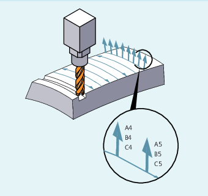

Stirnfräsen dient zur Bearbeitung beliebig gekrümmter Oberflächen.
Für diese Art des 3D-Fräsens benötigen Sie die zeilenweise Beschreibung der 3D-Bahnen auf der Werkstückoberfläche.
Die Berechnungen werden unter Berücksichtigung der Werkzeugform und Werkzeugabmessungen üblicherweise im CAM durchgeführt. Die fertig berechneten NC-Sätze werden dann über Postprozessoren in die Steuerung eingelesen.
Die Beschreibung der Bahnkrümmung erfolgt über Flächennormalenvektoren mit folgenden Komponenten:
A4, B4, C4 Startvektor am Satzanfang
A5, B5, C5 Endvektor am Satzende
Steht in einem Satz nur der Startvektor, bleibt der Flächennormalenvektor über den ganzen Satz konstant. Steht in einem Satz nur der Endvektor, so wird vom Endwert des vorherigen Satzes über Großkreisinterpolation zum programmierten Endwert interpoliert.
Sind Start- und Endvektor programmiert, so wird zwischen beiden Richtungen ebenfalls über Großkreisinterpolation interpoliert. Hierdurch lassen sich kontinuierlich glatte Bahnwege erzeugen.
In der Grundstellung zeigen Flächennormalenvektoren unabhängig von der aktiven Ebene G17 bis G19 in Z-Richtung.
Die Länge eines Vektors ist ohne Bedeutung.
Nicht programmierte Vektorkomponenten werden zu Null gesetzt.
Bei aktivem ORIWKS (siehe "Bezug der Orientierungsachsen (ORIWKS, ORIMKS)") beziehen sich die Flächennormalenvektoren auf den aktiven Frame und werden bei Frame-Drehung mitgedreht.
Der Flächennormalenvektor muss innerhalb eines über Maschinendatum einstellbaren Grenzwertes senkrecht zur Bahntangente stehen, ansonsten wird Alarm ausgegeben.